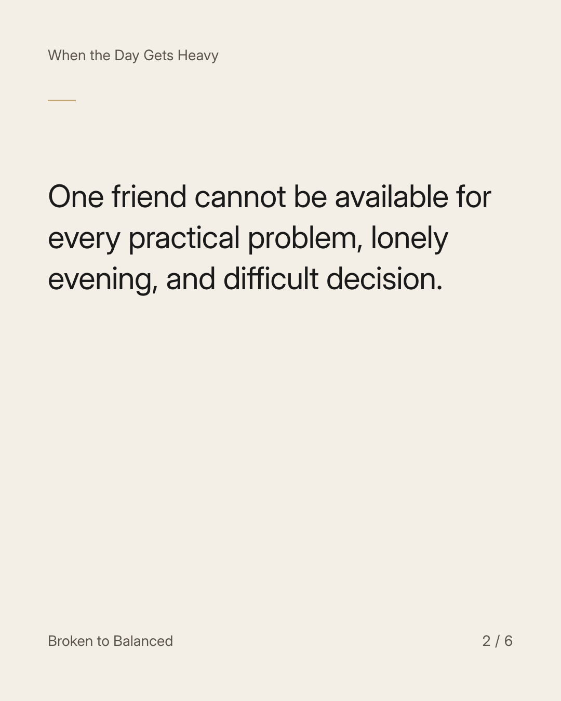
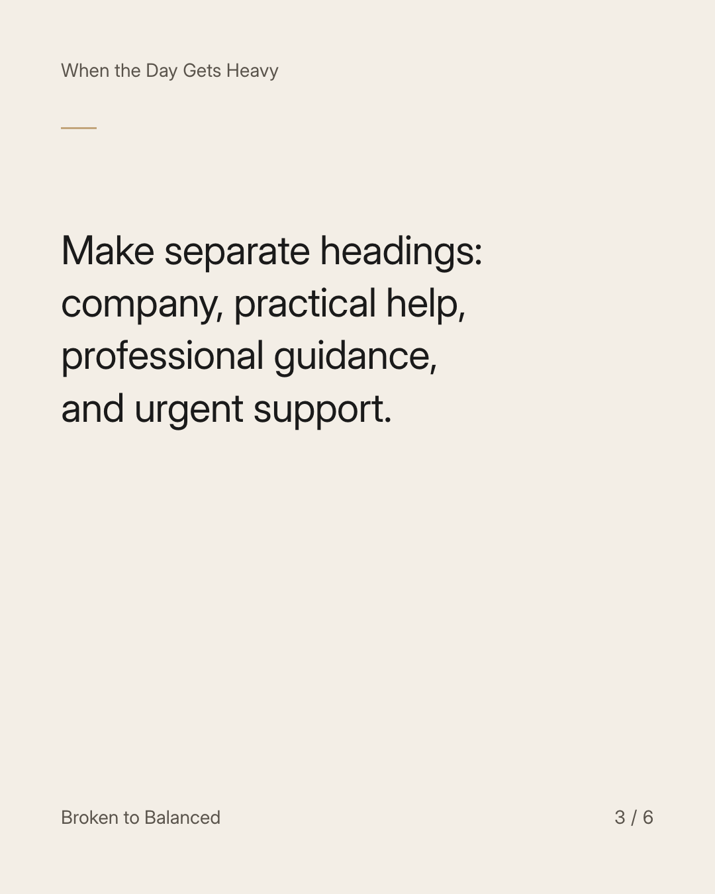
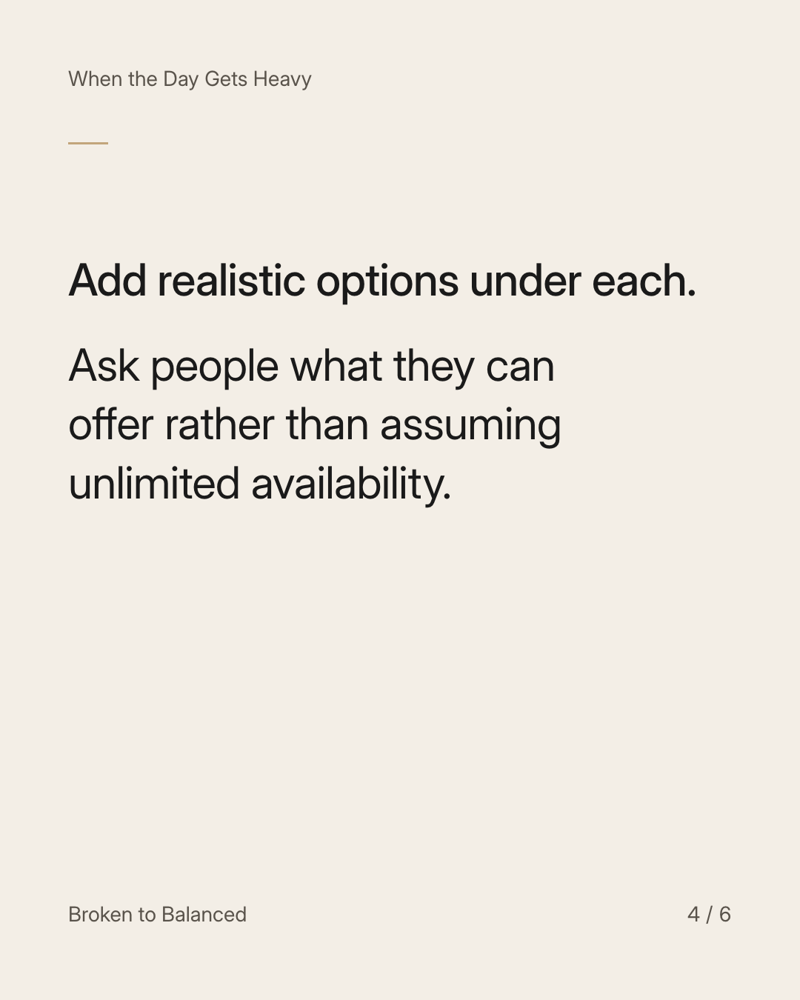
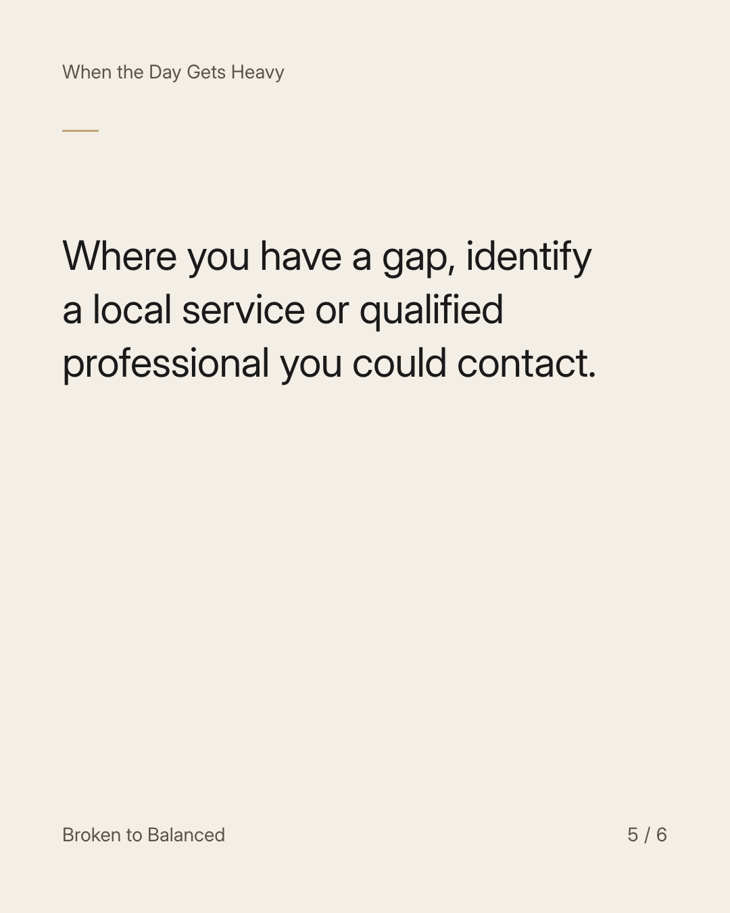
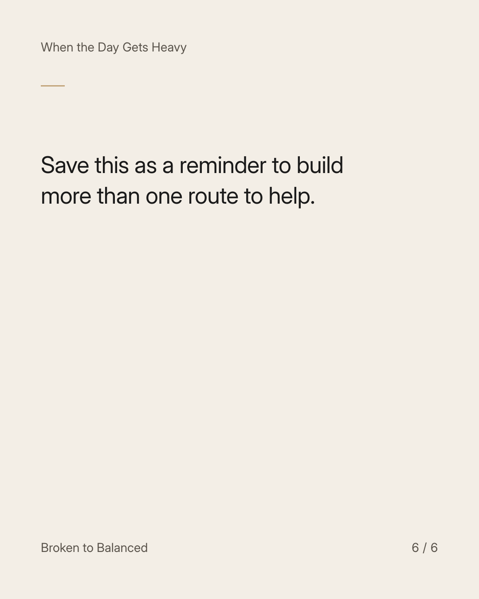

Exact text and accessibility text
Make a list of support that is not just one person's name.
Slide 1 of 6. Make a list of support that is not just one person's name.


Exact text and accessibility text
One friend cannot be available for every practical problem, lonely evening, and difficult decision.
Slide 2 of 6. One friend cannot be available for every practical problem, lonely evening, and difficult decision.


Exact text and accessibility text
Make separate headings: company, practical help, professional guidance, and urgent support.
Slide 3 of 6. Make separate headings: company, practical help, professional guidance, and urgent support.


Exact text and accessibility text
Add realistic options under each. Ask people what they can offer rather than assuming unlimited availability.
Slide 4 of 6. Add realistic options under each. Ask people what they can offer rather than assuming unlimited availability.


Exact text and accessibility text
Where you have a gap, identify a local service or qualified professional you could contact.
Slide 5 of 6. Where you have a gap, identify a local service or qualified professional you could contact.


Exact text and accessibility text
Save this as a reminder to build more than one route to help.
Slide 6 of 6. Save this as a reminder to build more than one route to help.
Exact caption
Plain-text fallback: select and copy the caption.